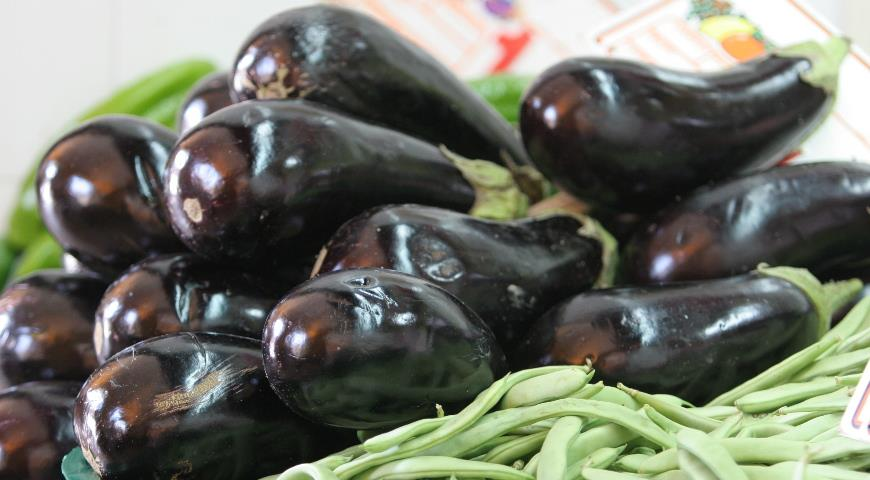
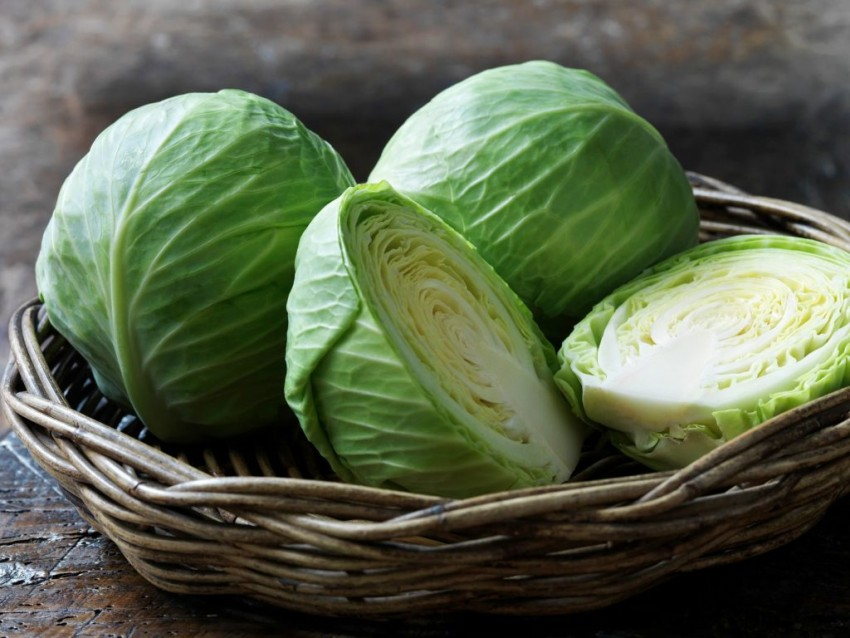
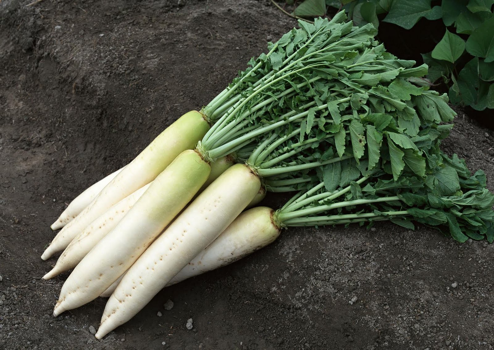
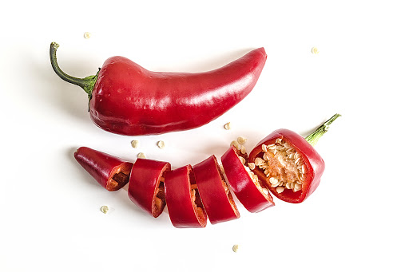

Кабачок — кустовая разновидность тыквы обыкновенной с продолговатыми плодами, без плетей. Плоды могут быть зелёного, жёлтого, чёрного или белого цвета. Мякоть нежная и быстроваркая.
Морковь посевная — двулетнее растение, овощная культура, подвид вида морковь дикая. Обычно в быту под словом «морковь» подразумевается широко распространенный корнеплод именно этого растения, который обычно относят к овощам.

Баклажа́н, или Паслён тёмнопло́дный — вид многолетних травянистых растений рода Паслён. Возделывается как однолетнее растение. Съедобен только плод. В ботаническом смысле это ягода, в кулинарном рассматривается как овощ. Известен также под названием бадриджа́н.
Ты́ква — род травянистых растений семейства Тыквенные. Под словом «тыква» в России обычно понимаются виды Тыква обыкновенная и Тыква гигантская, широко распространённые и культивируемые как пищевое и кормовое растение.
Ты́ква — род травянистых растений семейства Тыквенные. Под словом «тыква» в России обычно понимаются виды Тыква обыкновенная и Тыква гигантская, широко распространённые и культивируемые как пищевое и кормовое растение.

Капу́ста огоро́дная:460 — двулетнее растение, сельскохозяйственная культура; вид рода Капуста семейства Капустные.

Редька посевная, или Редька огородная — однолетнее или двулетнее травянистое растение, вид рода Редька семейства Капустные.

Пе́рец стручко́вый, Перец овощной однолетний — вид однолетних травянистых растений рода Capsicum семейства Паслёновые, а также его плоды. Сельскохозяйственная овощная культура. Сорта перца стручкового делят на сладкие и горькие. Последним, известным как красный перец, острый вкус придаёт алкалоид капсаицин.